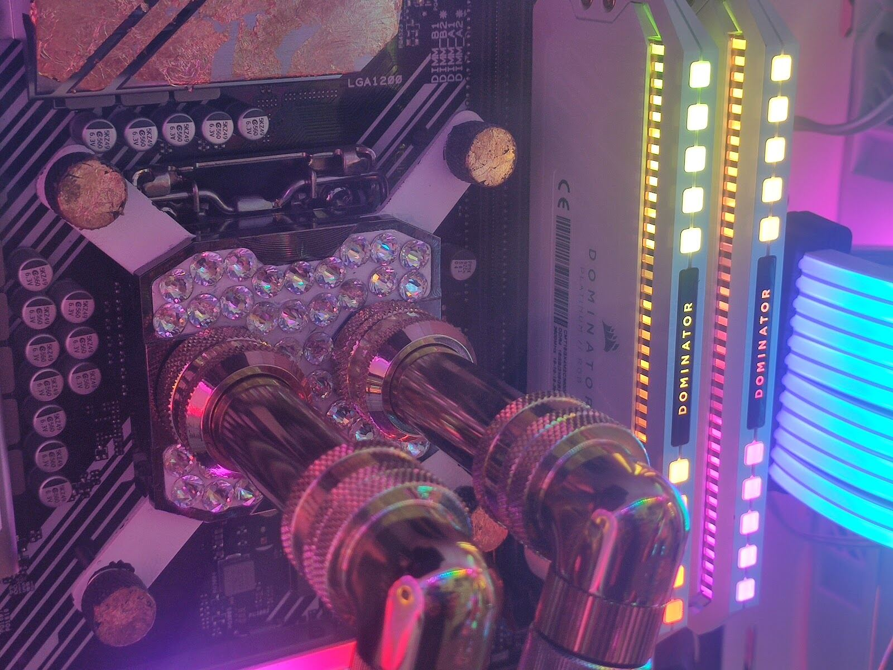
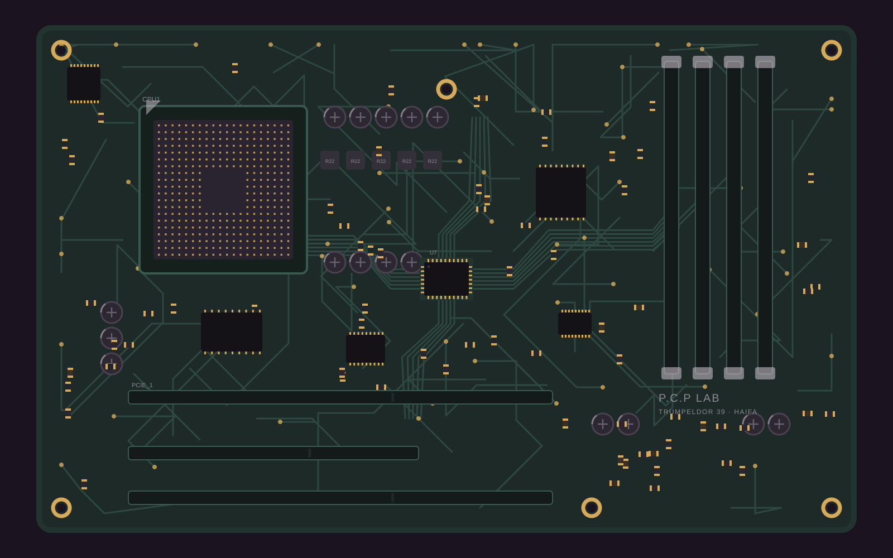
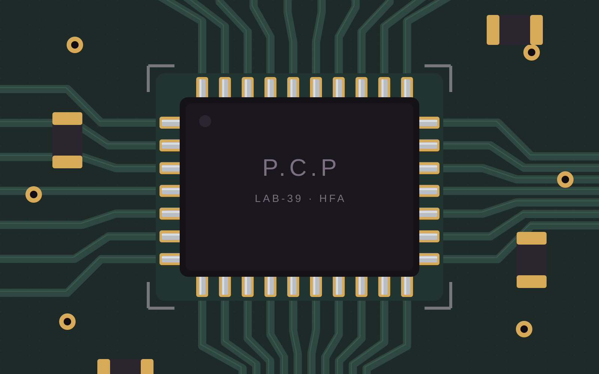
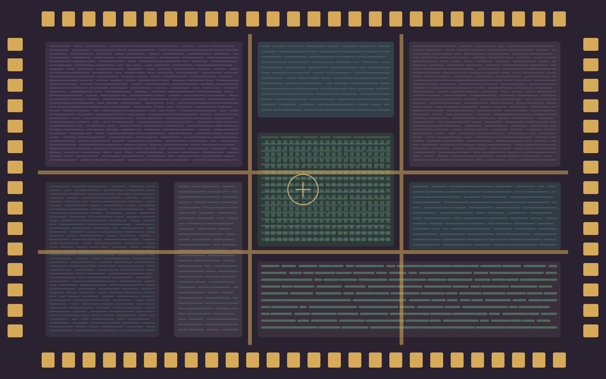
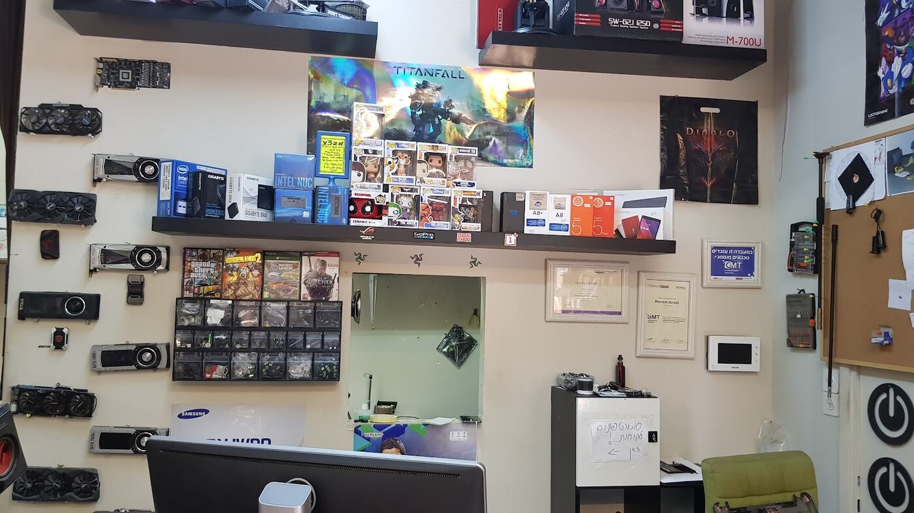
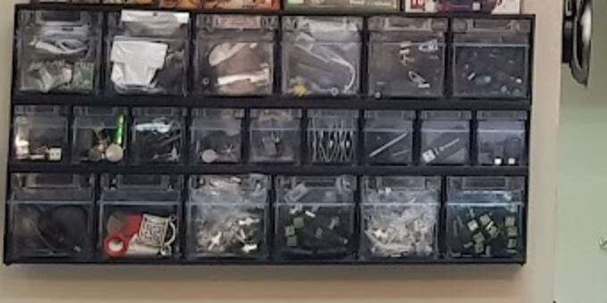
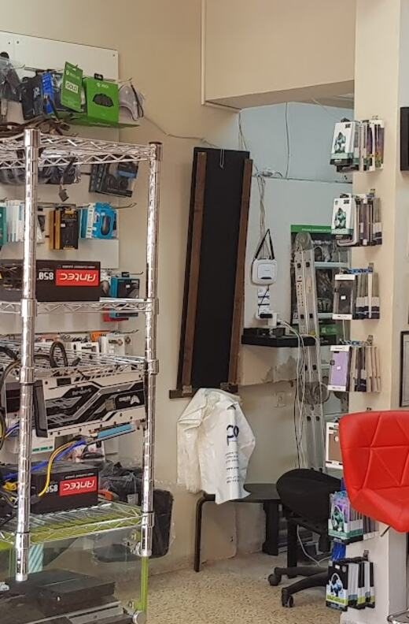
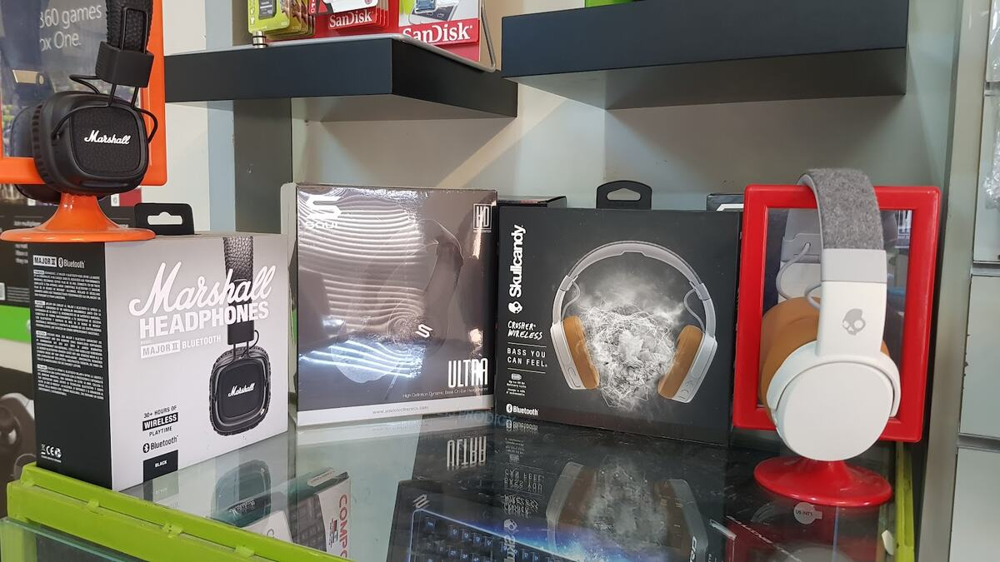
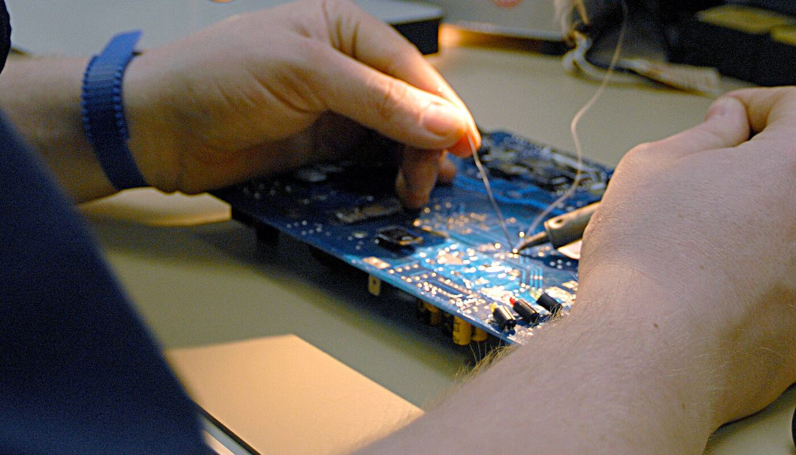

מחשב שלא עולהA PC that won’t boot
גם כזה שבניתם לבד.Even one you built yourself.
קונספט לדוגמה שנבנה עבור P.C.P · זה אינו האתר הרשמי של העסקConcept demo made for P.C.P · not the business’s official website
P.C.P מחשבים, סלולר ומעבדה: חנות ומעבדת תיקונים למחשבים ולטלפונים בטרומפלדור 39, חיפה.P.C.P Computers, Cellular & Lab: a shop and repair lab for computers and phones at 39 Trumpeldor St, Haifa.




קודם בודקים את הלוח כולו.First, the whole board.
מגיעים בדיוק למה שלא עובד.Right down to what isn’t working.
אם לא שווה לתקן, אומרים לכם. בלי חיוב מיותר.If it isn’t worth fixing, you hear it. No needless charge.
מחשבים, סלולר, חלקים ואביזרים, ממש ליד שולחן העבודה.Computers, phones, parts and accessories, right beside the workbench.




ממחשב שלא עולה ועד מסך שצריך להחליף.From a PC that won’t start to a screen that needs replacing.

גם כזה שבניתם לבד.Even one you built yourself.
אייפון, שיאומי, סמסונג.iPhone, Xiaomi, Samsung.
מסבירים מה היתרון של כל חלק.The upside of each part, explained.
כשכבר לא שווה לתקן.When repair no longer pays off.
קצת ממה שלקוחות כתבו.A little of what customers wrote (translated from Hebrew).
״הבאתי אליהם מחשב שבניתי לבד ולא הצלחתי להפעיל. למרות שהמצב היה מורכב, הצוות היה סופר-שירותי, מקצועי וטיפל בהכל.״“I brought them a PC I’d built myself and couldn’t get to start. It was complicated, but the team was super helpful, professional and handled everything.”
״הגעתי לתקן מסך שבור לטלפון שיאומי, כל השירות היה מאוד מהיר, מקצועי ובמחיר נוח. תודה רבה!״“I came in to fix a broken screen on a Xiaomi phone. The whole service was very fast, professional and well priced. Thanks a lot!”
״כל פעם שהגעתי עם תיקון כלשהו, מקטן לגדול, תמיד הסבירו בנימוס, מקצועיות ושקיפות. בדרך כלל הציעו מספר חלופות וחלקים והסבירו מה היתרון של כל אופציה.״“Every time I came with a repair, small or big, they explained it politely, professionally and openly. They usually offered several alternatives and parts and explained the upside of each option.”
שלוש שאלות, וההודעה יוצאת לוואטסאפ של המעבדה.Three questions, and the message goes to the lab’s WhatsApp.
לקוחות מציינים כניסה נגישה לחנות.Customers mention an accessible entrance.